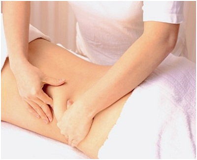

Giảm béo không phẫu thuật – không hiệu quả như bạn nghĩ
Giảm béo không phẫu thuật được giới thiệu là phương pháp giảm béo hiệu quả, không động chạm dao kéo mà vẫn có thể giúp loại bỏ lượng mỡ thừa ra khỏi cơ thể. Tuy nhiên, phương pháp này thực sự có hiệu quả như lời hứa hẹn?  Nhiều người tin rằng massage giảm béo có thể giúp loại bỏ mỡ thừa trên cơ thểXông hơi, massage, bấm huyệt… hay các công nghệ giảm béo không phẫu thuật bằng sóng siêu âm…được giới thiệu là phương pháp giảm béo không đòi hỏi phải vận động quá nhiều, cũng không cần ăn kiêng. Với lời hứa hẹn giảm 3-5kg trọng lượng cơ thể, 7-10 cm vòng bụng, 4-6 cm bắp tay, chân, đùi, mông… chỉ trong vài liệu trình, phương pháp này được đông đảo chị em lựa chọn.
Tuy nhiên theo các chuyên gia thì phương pháp này hoàn toàn mang lại hiệu quả “giả tạo”. Bởi giảm béo xông hơi thực tế không thể làm tan mỡ mà biện pháp sử dụng nhiệt này chỉ làm mất nước tại chỗ của cơ thể nên gây cảm giác gầy nhanh chóng. Thực tế trọng lượng cơ thể sẽ được phục hồi khi uống bù đủ nước. Việc xông hơi liên tục trong thời gian dài còn có thể làm gây mất nước, ảnh hưởng đến sức khỏe.
Còn massage, bấm huyệt là phương pháp có tác dụng kích thích hệ tuần hoàn tại chỗ tăng hoạt động chứ không làm gia tăng hoạt động của cơ xương khớp. Do đó không có sự tiêu hao năng lượng khi massage vì vậy không thể làm tan mỡ theo phương pháp này.
Các phương pháp massage, bấm huyệt, giảm béo bằng sóng siêu âm không hiệu quả nhưng chúng ta vấn nghĩ.Đặc biệt, giảm béo không phẫu thuật bằng công nghệ laser, sóng siêu âm hoặc sóng RF được ứng dụng tại nhiều trung tâm, địa chỉ thẩm mỹ với quảng cáo: có tác dụng trong việc phân hủy mỡ thừa bằng sóng siêu âm hiện đại, giúp hóa lỏng mỡ thừa, đào thải theo cơ chế tự nhiên qua đường bài tiết (mồ hôi, nước tiểu) chỉ sau liệu trình ngắn là hoàn toàn không có cơ sở. Bởi phương pháp này không trực tiếp tác động lên mô mỡ và không đưa mỡ ra ngoài mà phải chờ cơ thể đào thải nên hiệu quả giảm mỡ không cao, phải thực hiện nhiều lần. Thậm chí nếu thực hiện nhiều có thể gây đau, tổn thương vùng da điều trị.
Thực tế cho thấy, muốn hủy bỏ các khối mỡ lớn tích tụ lâu năm thì chỉ có thể giải quyết bằng hóa lỏng mỡ và đưa chúng ra khỏi cơ thể bằng phương pháp hút mỡ hiện đại.